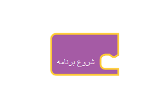
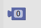
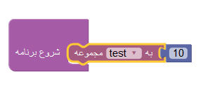
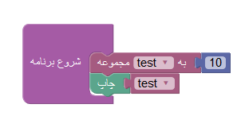

آشنایی و استفاده از متغیر ها
خب بچه ها میخوایم راجع به متغییر ها صحبت کنیم.
همون طور که میدونید کلمه متغییر از تغییر مییاد. متغییر به زبون انگلیسی میشه Variable . تو برنامه هامون وقتی از متغییر ها استفاده میکنیم که بخواییم از چیزی مثله یه عدد یا یه متن رو به صورت موقت ذخیره کنیم.بیایین با مثالی از دنیای واقعی بیشتر با متغییر آشنا بشیم.
فرض کنیم که این مغز انسان باشه...
ما کارهای روزمرهای داریم مثه انجام تکالیف مدرسه، یا رفتن به سوپر مارکت، تمرین برنامه نویسی و .... که معمولا این کارها رو تو مغزمون ذخیره میکنیم. اون قسمتی که این کارها داخلش ذخیره میشن رو بهش میگن متغییر یا Variable. چرا بهشون میگیم متغییر ؟ چون این اطلاعات و به صورت متغییر داخل مغزمون ذخیره میشن.
فرض کنیم که امروز دیگه معلم خوبمون بهمون تلکیف نداده و ما میخواییم عصر بریم پارک و بازی کنیم. چون دیگه نیازی به "انجام تکالیف مدرسه" مون نداریم میاییم و ر"فتن به پارک "رو در محل ذخیره "انجام تکالیف مدرسه" ذخیره میکنیم.
برای شروع برنامه ابتدا باید از بلاک شروع برنامه استفاده کنیم.اگر از این بلاک استفاده نکنیم برنامه ما اجرا نمیشه!!
ما برای ایجاد یک متغییر از شکل زیر استفاده میکنیم. از منوی سمت چپ "متغییر ها" را انتخاب میکنیم
از منوی جدید باز شده بر روی گزینه "ایجاد متغییر" کلیک کنید.
سپس نام متغییر را وارد میکنیم و بر روی ok کلیک کنید.
متغییر ما ایجاد میشود.

بلاک شروع برنامه رو باز به برنامه اضافه میکنیم و سپس از بلاک های متغییر مون استفاده میکنیم.

با استفاده از بلاک یک عدد به متغییر هامون عدد میدهیم.
به این صورت به متغییر عدد می دهیم
با استفاده از بلاک چاپ متغییر مون رو چاپ می کنیم
با استفاده از بلاک جمع کننده دو متغییر را جمع میکنیم.

 آشنایی و استفاده از متغیر ها
آشنایی و استفاده از متغیر ها
عزیزم فرض کن که پدربرزگ به تو 5 تا سیب بده و مادربزرگ هم به تو 6 تا سیب بده.با کمک متغییر ها نشون بده چند تا سیب داری.